Previous Work Review#
- We finish investigating the Language Reward Shaping model and we find out that it is slower than a vanilla PPO+RND learning agent. We found out that rewarding to partially matched trajectories significantly slows down the learning speed.
- Now we should move forward to the next research questions.
You need password to access to the content, go to Slack *#phdsukai to find more.
Part of this article is encrypted with password:
--- DON'T MODIFY THIS LINE ---
[TOC]
TODO#
- test ALFRED model FILM++
- think about how to mathematically express the ALFRED model
- think about how to generate line from natural language instruction (diffusion way or something, how to represent line in math)
The new environment ALFRED#
https://github.com/askforalfred/alfred/tree/master/data
- contains 8k+ expert demonstrations with 3 or more language annotation each
- a trajectory consists of
- a sequence of expert actions,
- the corresponding image observations,
- and language annotations describing segments of the trajectory
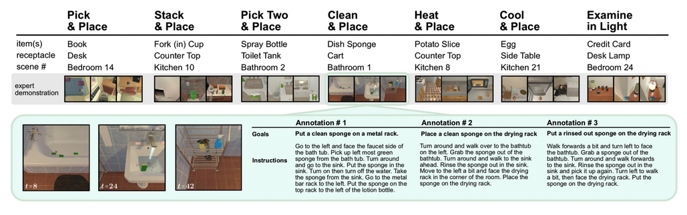
Can we generate data for ourselves?
https://github.com/askforalfred/alfred/tree/master/gen
- although we cannot directly interact with the environment, the author told us that they use PDDL to generate expert trajectories
- this means that translating natural language instruction back to PDDL and then control the agent is the go-to solution.
Nir’s recommended paper#
https://embodied-ai.org/papers/2022/15.pdf
What is their motivation#
- end-to-end deep learning methods struggle at these tasks due to long-horizon and sparse rewards.
What is their contribution#
- Their main innovation relies on combining DL models for perception and NLP with a new egocentric planner based on successive planning problems formulated using PDDL syntax, both for exploration and task accomplishment
- their planning framework can naturally recover from action failures at any stage of the planned trajectory
Their model#
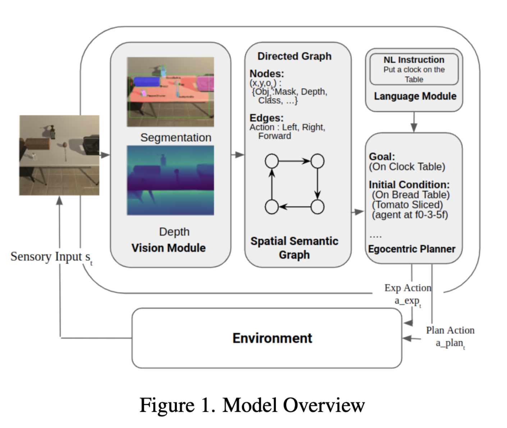
- Their vision module helps to set up spatial semantic graph. This semantic graph will be converted to the current condition written in PDDL
- the Language module will translate the high-level instructions to the goal condition written in PDDL
- after that, the egocentric PDDL planner can plan the actions by using the goal information from the language module and the state information from the spatial semantic graph
HOWEVER, they did not write how they build the egocentric planner in this paper#
- so we cannot know how exactly this planner can recover from failure
- and we cannot know how their Egocentric planner is different from planners in the previous studies.
We know the architecture of their language module#
- they say they use the same language module in the previous work FILM
- https://arxiv.org/pdf/2110.07342.pdf#subsection.A.9
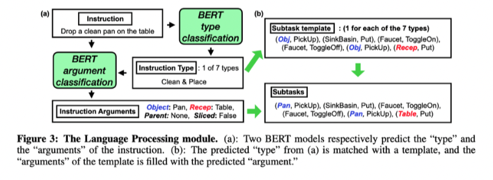
- since this benchmark only have 7 task types
- they design a task template for each task types
- then they train the language module to extract the arguments from the instruction
Limitation of current work#
- most studies did not fully utilise the low-level instructions
- some directly map the “goal instruction” to a subtask template (e.g., FILM)
- FILM tried to use low-level instruction but only got 2% improvement
- Why did current work not want to use low-level instructions?
- Those authors did not think that low-level instructions can contribute to constructing the semantic map (environment model)
- Once the environment model (in PDDL) is built by agent exploration and the goal is parsed from the goal instruction, then the action plan can be generated automatically without the need of those low-level instructions.
- Those authors did not think that low-level instructions can contribute to constructing the semantic map (environment model)
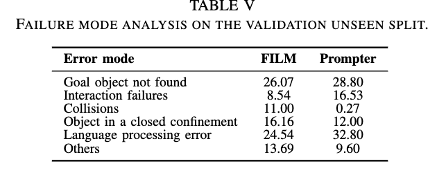
- the table shows that language processing error is still an big error for those models (the language processing is to convert natural language instructions into goals or sequence of low-level agent controls)
What we can improve#
- we can better utilise the low-level instructions dataset to train our agent
How to utilise the low-level instructions dataset?#
- I think there can be some directions
- RQ1: how to use low-level instructions to assist the construction of the spatial semantic graph (i.e., the World Model)?
- this is a multimodal learning problem -> using both visual observations and low-level language to construct the semantic graph.
- low-level instructions should have the same semantic meaning as the plan generated by the planner -> RQ2: how to translate low-level instructions to PDDL plan or the other way round?
- so this is a translation problem
- we notice that there is still a gap between the planed action and the real action (e.g., action in the plan (Pickup, Apple), real action sequence: <RotateLeft, Forward, Click>)
- the trajectory sequence (in RGB) should match with the low-level instructions RQ3: how to map low-level instructions to low-level actions (instruction following)?
- the low-level actions is dependent both on the low-level instruction and the current environment.
- this is a visual observation and language alignment problem (aligning state, action, temporal constraints?)
- the trajectory sequence (in RGB) should match with the low-level instructions RQ3: how to map low-level instructions to low-level actions (instruction following)?
- RQ1: how to use low-level instructions to assist the construction of the spatial semantic graph (i.e., the World Model)?
Example for RQ1:#
https://arxiv.org/pdf/2211.03267.pdf
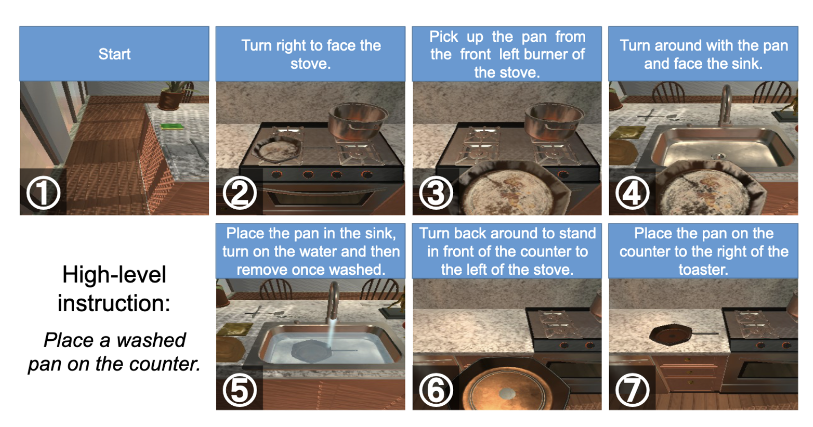
- one of their approach is to use low-level instructions / observation descriptions to extract the location of objects by using language model prompting method
- They use the low-level instruction as the in-context input, then attached with the query prompt:
- prompt is “Something you find at [Y] is .”, where is filled with the name of the object to find, and LLMs fill [Y] with landmark names.
- landmark objects are those big, immovable objects, manually selected by the authors
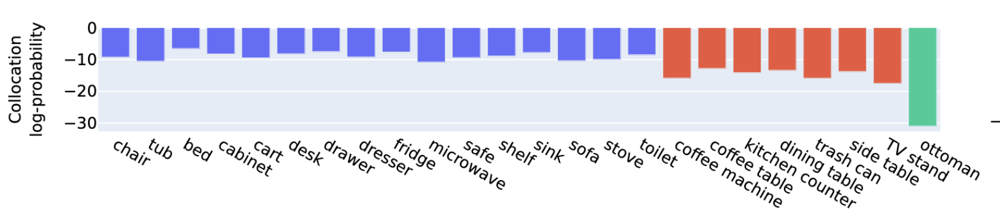
Extra: A tiny proposal for continuing the Montezuma’s Revenge stuffs#
- we want to let agent to follow instructions with various lengths
- we want to avoid accumulated false positive errors.
visualise low level instructions as a line#
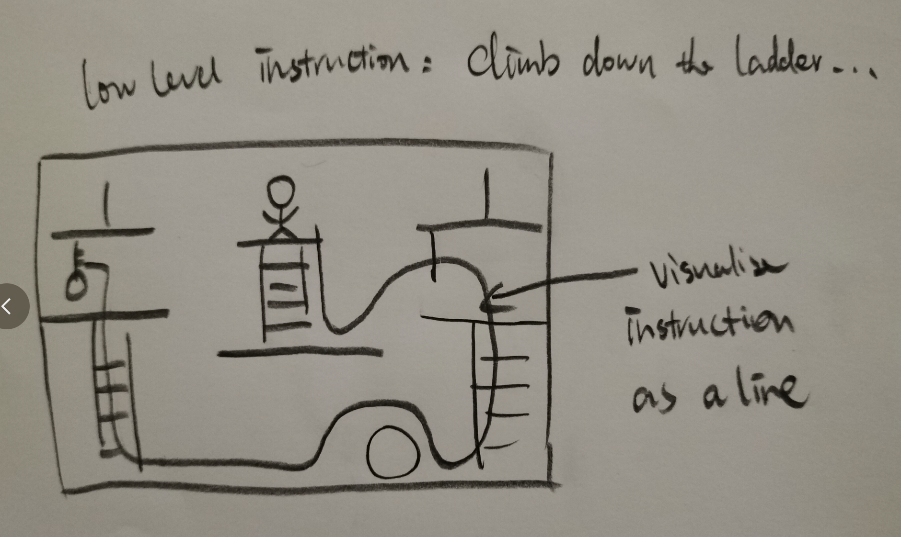
- since the camera and the environment is fixed, we can actually draw a line to represent the agent’s trajectory
- then natural language instruction can also be converted into a line
- short instruction maps to a short line, long instruction maps to a long line
- in deployment, the agent just follows the line generated by the natural language instruction
- advantages
- there is no more no more false positive reward issue because it is no more a RL agent
Reference#
- Planning With Diffusion for Flexible Behaviour Synthesis
- Author: Michael Janner et. al.
- Publish Year: 21 Dec 2022
- Review Date: Mon, Jan 30, 2023
- Language Models as Agent Models
- Author: Jacob Andreas
- Publish Year: 3 Dec 2022
- Review Date: Sat, Dec 10, 2022
- Dissociating Language and Thought in Large Language Models a Cognitive Perspective
- Author: Kyle Mahowald et. al.
- Publish Year: 16 Jan 2023
- Review Date: Tue, Jan 31, 2023
- FILM: Following Instructions in Language With Modular Methods
- Author: So Yeon Min et. al.
- Publish Year: 16 Mar 2022
- Review Date: Wed, Feb 1, 2023
- Prompter: Utilizing Large Language Model Prompting for a Data Efficient Embodied Instruction Following
- Author: Yuki Inoue et. al.
- Publish Year: 7 Nov 2022
- Review Date: Wed, Feb 1, 2023
- A Planning Based Neural Symbolic Approach for Embodied Instruction Following
- Author: Xiaotian Liu et. al.
- Publish Year: 2022
- Review Date: Thu, Feb 2, 2023
- See, Think, Confirm: Interactive Prompting Between Vision and Language Models for Knowledge Based Visual Reasoning
- Author: Zhenfang Chen et. al.
- Publish Year: 12 Jan 2023
- Review Date: Mon, Feb 6, 2023
- What Makes Good Examples for Visual in Context Learning
- Author: Yuan Zhang et. al.
- Publish Year: 1 Feb 2023
- Review Date: Mon, Feb 6, 2023
- Grounding Language Models to Images for Multimodal Generation
- Author: Jing Yu Koh et. al.
- Publish Year: 31 Jan 2023
- Review Date: Mon, Feb 6, 2023
- Mastering Diverse Domains Through World Models
- Author: Danijar Hafner et. al.
- Publish Year: 10 Jan 2023
- Review Date: Tue, Feb 7, 2023
Appendix#
Natural language instructions following with different specificity levels#
- this research proposal is linked to handling the “abstraction level” of instructions
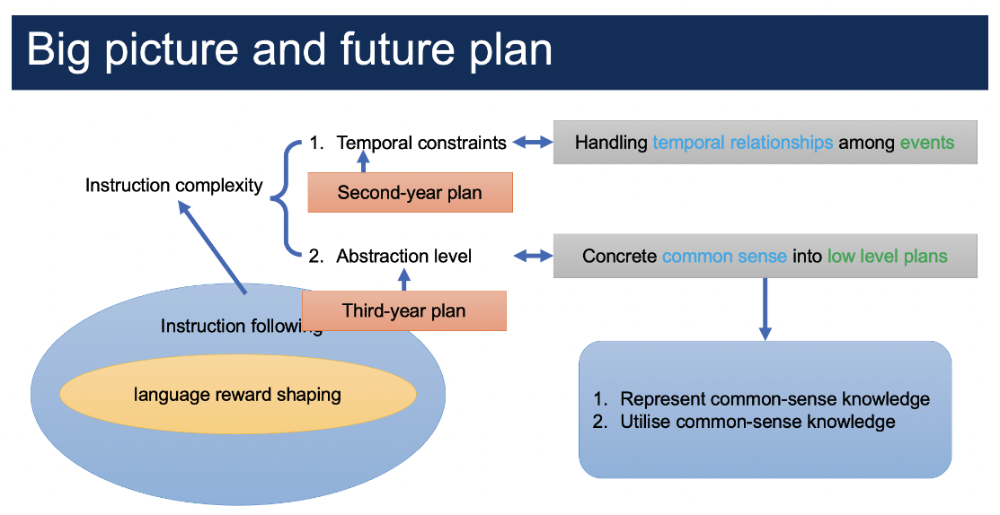
Specificity level
- The term “specificity level” is related to “abstraction level” and “granularity level”.
- The term “specificity level” is from this paper “Huang, Jie, et al. “Can Language Models Be Specific? How?.” arXiv preprint arXiv:2210.05159 (2022).” paper review blog here
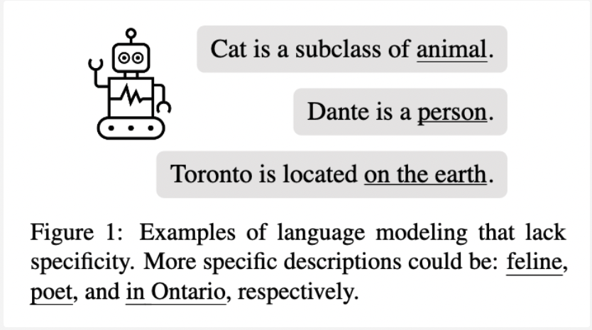
Why is the specific level of instructions important in instruction-following tasks
- While it is easy for an instruction-following agent to deal with specific (low-level) instructions, it is hard to deal with less specific (ambiguous) instructions.
- It is a one-to-many mapping from less-specific (general) instructions to agent trajectories. Thus, a supervised learning method that maps one instruction to one trajectory may not work
Why deriving low-level instruction from high-level instructions is hard
- high-level instruction is abstract and general and can be independent from the environment.
- direct mapping from high-level instruction to low-level instructions is impossible because low-level instructions are grounded by specific environments.
Some random ideas#
This is a loop
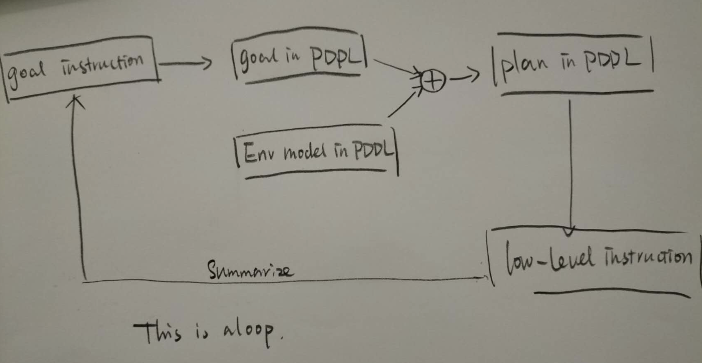
- This loop can form a iterative translation situation
- I think Trevor had discussed about the iterative translation situation before in paper:
- Hoang, Vu Cong Duy, et al. “Iterative back-translation for neural machine translation.” Proceedings of the 2nd workshop on neural machine translation and generation. 2018.
- https://aclanthology.org/W18-2703.pdf
again, phrase corruption
- we can again augment the text data by replacing noun phrase and the verb phrases to create hard negatives to improve agent’s performance
Other images about ALFRED benchmark#
CURRENT SOTA model overview
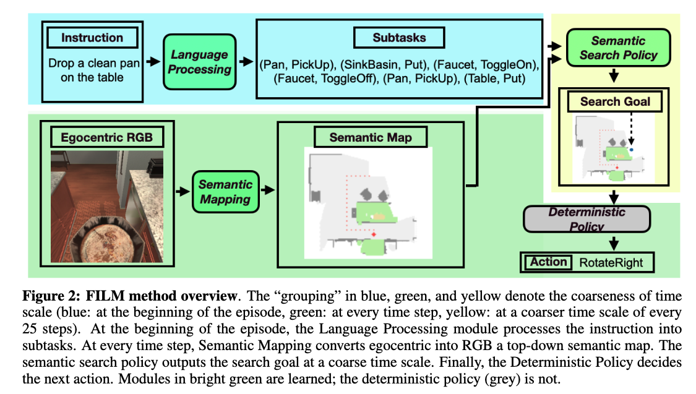
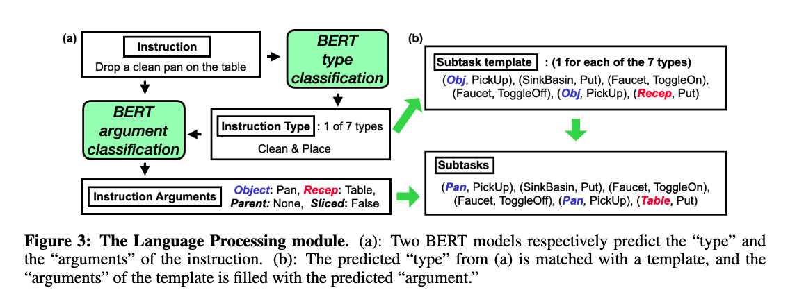